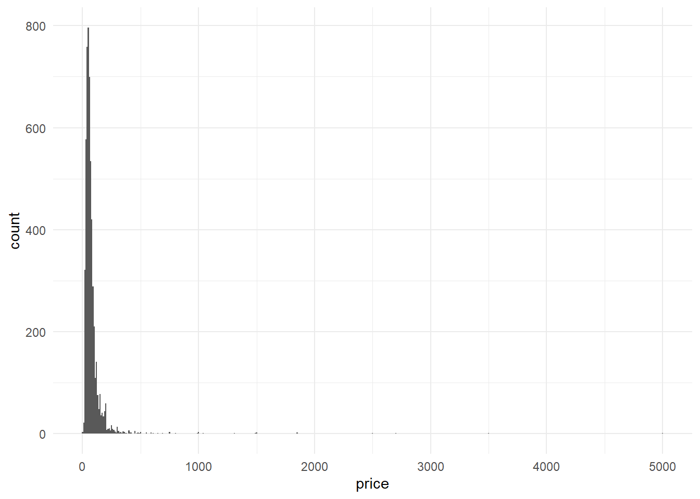
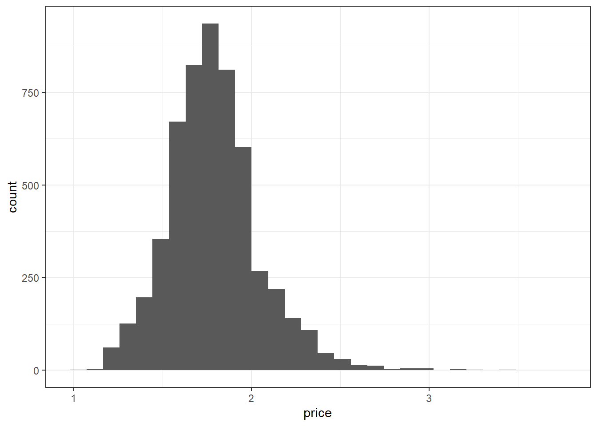
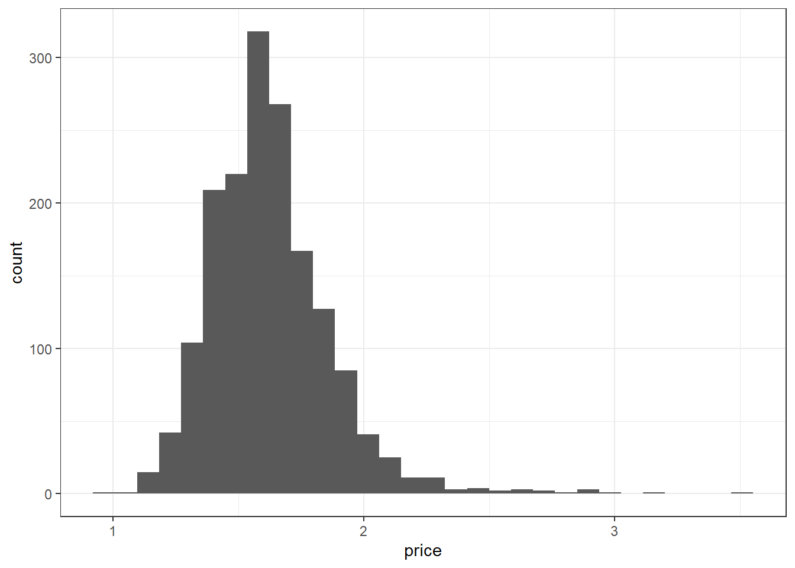

Chapitre 3 Prise en main
Pour démarrer :
1 - Télécharger et installer r sur le site du Comprehensive r Archive Network 2 - Télécharger et installer Rstudio.(version free) 3 - Dans le cadre de cet atelier, on adopte la méthode du rmarkdown. On recommande fortement de lire l’ouvrage de référence, même si la prise en main est très rapide. Il est désormais indispensable d’utiliser le package tidyverse et en particulier les fonctions de manipulation et de pipe ( %>%) fournies par dplyr
3.1 La convention du Rmarkdown
Différentes manières d’interagir avec r sont possibles : la première est le mode console, pour de petite opérations et un utilisateur chevronné, celà peut être commode car rapide mais très rapidement on sera amené à enregistrer les opérations dans des scripts. Une idée novatrice a été d’intégrer l’ensemble des élements dans un seul document : le script découpé en petits éléments : des chunks, le commentaire et l’analyse verbabe dans un format texte, et le résultat. Dans l’univers python il s’agit des carnets Jupiter, pour r c’est le rmarkdown.
C’est un dialecte du markdown générique adapté au langage r. On recommande au lecteur d’en lire le manuel et de le garder dans ses onglets.
Quelques éléments de base :
un document markdown est composé de plusieurs éléments
- Yalm dans cet entête les éléments essentiels sont définis et paramétrés
- Texte : il suit les conventions de mise en forme du html :
** des # pour les niveau de titres
** (x)[*.html] pour des liens et
 pour des images
**
pour des images
** - Les chunks sont isolé par 3 tiks au début et à la fin.
- Résultats apparaissent sous les chunks
https://rmarkdown.rstudio.com/authoring_pandoc_markdown.html#Footnotes
Ce document peut être excécuté et publié sous différents formats : html, lpadf ou même word avec les éléments suivants * plan * texte * code * résultats * Bibliographie * Références * liens * images
3.2 Lire les données
La première étape c’est la lecture des données. On commence par le plus simple la lecture de fichiers locaux, dont les formats sont multiples : csv, tsv, xlsx, Spss, etc… Le package readr contribue à cette tâche.
df <- read_csv("./Data/BXL_listings.csv")Il est possible aussi d’accéder en direct aux données du web, c’est bien utile pour s’assurer que les données sont bien fraiches. Par exemple une connexion à Nsppolls qui propose une compilation de tous les sondages d’intention de vote de la présidentielle 2022.
df_pol <- read_delim("https://raw.githubusercontent.com/nsppolls/nsppolls/master/presidentielle.csv",
delim = ",", escape_double = FALSE, trim_ws = TRUE)3.2.1 La diversité des formats
Peu de formats échappent à r, ils peuvent faire appel à des packages spécifiques
- excell
- Json
- shape et autre GIS :
- les formats bibliographique : bib et ris
3.2.2 Les autres accès aux données
Interfaces
le génie des API : ne pas se soucier de la mise à jour à chaque fois qu’on lance un calcul.
exemples :
- base d’archive de presse
- api des réseaux sociaux : tweetr
- open data
3.3 Dplyr pour manipuler les données
C’est un des packages essentiels de la suite tidyverse. Il permet de manipuler aisément les données et mérite une étude approfondie. Un point de départ ou en français : dplyr .
3.3.1 Des pipes %>%
Une grand part de l’intérêt de dplyr est de reprendre un opérateur de maggritr très utiles : le pipe : %>%. Celui ci permet de passer le résultats de l’opération à gauche, dans la fonction de droite.
Un exemple simple . Dans la ligne de code suivante, une première fonction lit le fichier CSV, et envoie le résultat de cette lecture dans une fonction graphique élémentaire: compter le nombre d’occurences des modalité de la variable room_type. On reviendra longuement sur ggplot, à ce stade ce qui compte c’est de retenir le procédé.
g <- read_csv("./Data/BXL_listings.csv") %>%
ggplot(aes(x=price))+
geom_histogram()
g
3.3.2 Des verbes
L’originalité de dplyr est de définir des fonctions comme des verbes. Chaque verbe désigne un type d’action. On va les examiner progressivement : Ils sont simples à comprendre : tansformer une variables, filter les obsersation selon un critère, isoler des variables, les groupper pour en calculer des résultats statistiqyes ( somme, moyenne, variance, max min etc) * les déployer selon un format long ou les distribuer en différents critères, les fusionner enfin selon les grandes modalité du SQL)
3.3.2.1 Mutate
En Français c’est “transformer”. On modifie la valeur d’une variable par une fonction plus ou moins complexe, éventuellement en ajoutant des conditions.
Dans notre exemple, faisant au plus simple, puisque la distribution est asymétrique, une transformation du prix par les log peut donner des résultats intéressants.
Et c’est le cas. On retrouve une distribution qui semble être gaussienne.
g <- read_csv("./Data/BXL_listings.csv") %>%
mutate(price=log10(price))%>%
ggplot(aes(x=price))+geom_histogram()
g
3.3.2.2 Filter
On peut vouloir se concentrer sur une sous population. par exemple les chambres privées.
g <- read_csv("./Data/BXL_listings.csv") %>%
filter(room_type=="Private room")%>%
# on note que le signe == est double, c'est pour dire que la variable prend la valeur, ou non, qui est proposée
mutate(price=log10(price))%>%
ggplot(aes(x=price))+geom_histogram()
g
3.3.2.3 select
On peut selectionner des colonnes pour créer un tableau spécifique
foo <- read_csv("./Data/BXL_listings.csv") %>%
dplyr::select(room_type,price) %>%
head(5) #afficher les 5 premières observations
foo## # A tibble: 5 x 2
## room_type price
## <chr> <dbl>
## 1 Entire home/apt 91
## 2 Entire home/apt 74
## 3 Hotel room 120
## 4 Entire home/apt 200
## 5 Entire home/apt 743.3.2.4 Group_by et summarize
c’est une opération clé, en groupant selon les modalités d’une ou pluseirs variables, on peut construire des tableaux aggrégés.On l’associera à summarize qui permet de calculer les statistique aggrégé selon le groupe que l’on a définit.
foo <- read_csv("./Data/BXL_listings.csv")%>%
dplyr::select(neighbourhood, price)%>%
group_by(neighbourhood ) %>%
summarise(averageprice=mean(price))
head(foo, 5)## # A tibble: 5 x 2
## neighbourhood averageprice
## <chr> <dbl>
## 1 Anderlecht 71.9
## 2 Auderghem 66.3
## 3 Berchem-Sainte-Agathe 65.9
## 4 Bruxelles 91.0
## 5 Etterbeek 75.83.3.2.5 Pivot_wider et pivot_longer
Si pour l’habitué des feuilles excell les données croisent des observations avec des variables, ce format n’est pas le seul moyen de réprésenter des données, et pas forcément le meilleur.

merge

merge
3.3.2.6 merge
On sera souvent amené à fabriquer des tableaux de donnée en les enrichissant d’un autre. On sera amené à fusionner les données.
Le cas le plus simples est d’ajouter d’autres observation à un fichier de données, si les variables sont identitiques on peut concaténer diffrents jeux de données avec la fonction de base rbind au contraire si les observation sont les mêmes, et que seules les variables sont différentes on peut utiliser cbind. L’équivalent de DPLYR est row_bind et column_bind
mais très souvent on sera dans des cas différents et la fusion des données devra suivre des index
merge
quatre types de fusion
genérale
fusion à gauche
fusion à droite
https://coletl.github.io/tidy_intro/lessons/dplyr_join/dplyr_join.html
3.4 Pour aller plus loin
On engage le lecteur à poursuivre avec
- le bookdown au-delà du markdown
- une théorie des tidy data